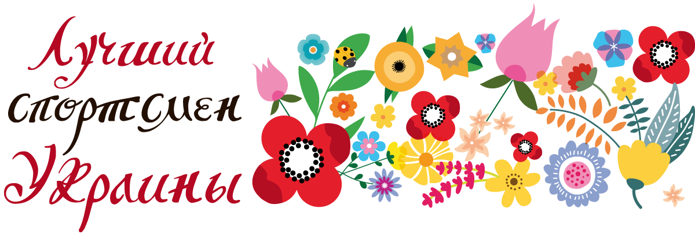
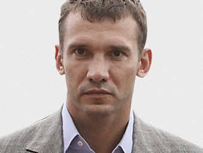

Вести Репортер
UBR.ua
UBR TV
Радио Вести
слушать
смотреть
Toggle navigation
Украина
Бизнес
Киев
Политика
Мир
Культура
Спорт
Инфографика
Фото
Видео
Сюжеты
ЕВРО 2016
Украинский футбол
Погода
Гороскоп
Блоги
ЕВРО 2016
Гороскоп
Погода
Афиша
Блоги

Владимир Кличко
Олимпийский чемпион Атланты-96. Сразу после победы на Олимпиаде ушел в профессиональный бокс, где стал одним из величайших супертяжей в истории. 10 лет удерживал звание чемпиона мира по боксу среди профи. Провел 59 поединков: 56 побед (49 нокаутом), 3 поражения. Свой 60-й бой Кличко собирается провести в октябре.

Андрей Шевченко
Лучший футболист в истории независимой Украины. Обладатель «Золотого мяча» —2004, который вручается лучшему футболисту мира. Рекордсмен по количеству голов за сборную Украины (48 мячей). Четвертьфиналист чемпионата мира — 2006. В июле 2016 года стал главным тренером национальной сборной Украины.
Сергей Бубка
35-кратный рекордсмен мира в прыжках с шестом. Его рекордный результат 6,14 м, установленный на стадионе в Италии, держится уже 22 года. Олимпийский чемпион, шестикратный чемпион мира, нынешний глава НОК Украины.
Оксана Баюл
Первая олимпийская чемпионка в истории независимой Украины. Оксана завоевала «золото» в фигурном катании в 1994 году на Играх в Лиллехаммере. Долгое время это было единственное «золото» нашей страны на зимних Олимпийских играх. В 2014-м это достижение повторили биатлонистки. Сама Баюл уже много лет живет в США.
Яна Клочкова
Пловчиха, единственная четырехкратная олимпийская чемпионка в Украине. Свои медали Яна взяла на двух Олимпиадах — в 2000 году в Сиднее и в 2004 году в Афинах — на дистанциях 200 и 400 метров комплексным плаванием.
Лилия Подкопаева
Двукратная олимпийская чемпионка по спортивной гимнастике. Обе свои медали Лилия взяла на первой летней Олимпиаде для Украины, которая прошла в 1996 году в Атланте. Подкопаева была лучшей в многоборье и вольных упражнениях. За год до этого Лилия стала абсолютной чемпионкой мира.
Василий Ломаченко
Двукратный олимпийский чемпион по боксу. На верхнюю ступень пьедестала он поднимался в Пекине-2008 и Лондоне-2012. После этого ушел в профессионалы, где уже успел выиграть пояс чемпиона мира. Считается одним из самых перспективных профи современности.
Ольга Харлан
Олимпийская чемпионка Пекина-2008 в командном первенстве. Свою первую медаль Олимпиады выиграла в 17 лет. Также в активе Харлан «золото» чемпионатов мира и Европы. Ольга — одна из главных надежд сборной Украины на Играх-2016 в Рио-де-Жанейро.
Все опросы
Проголосовать